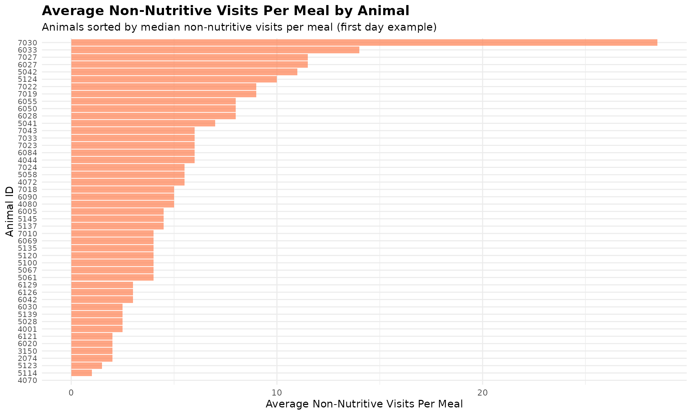
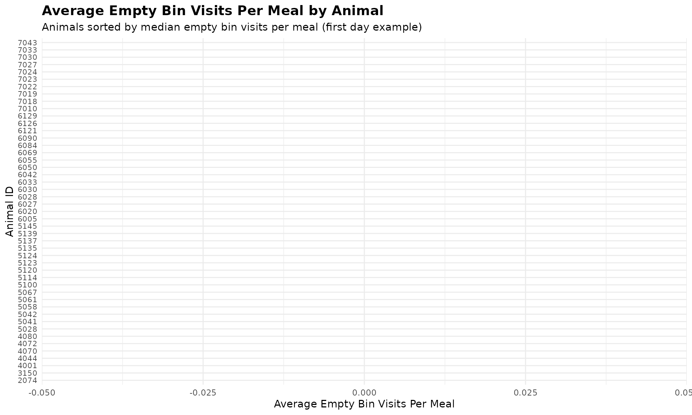
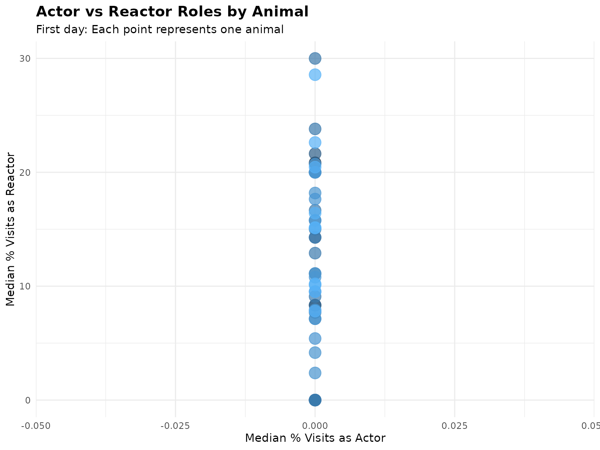
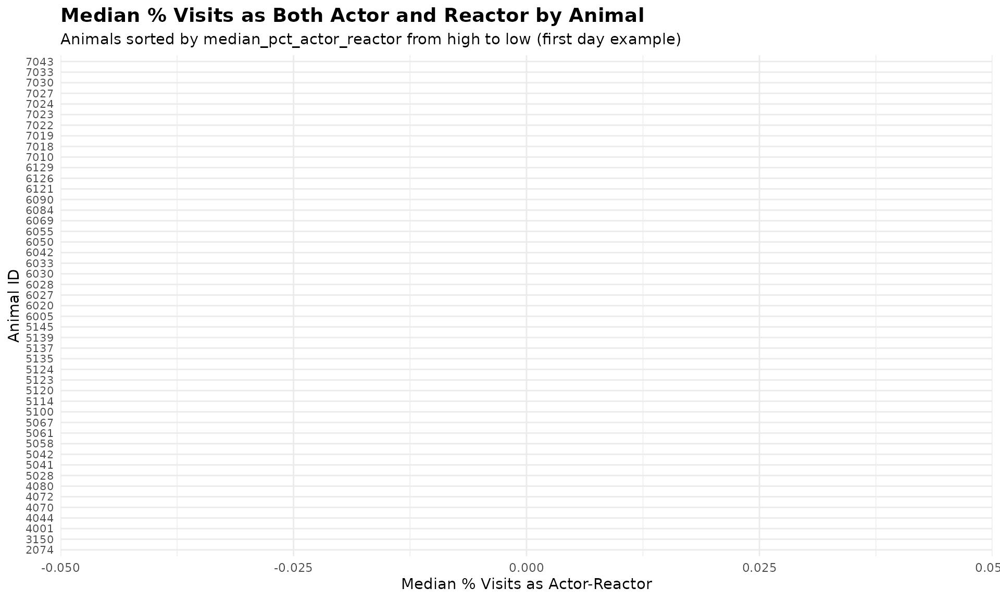

8. Meal-Level Behavior Analysis
Source:vignettes/meal_behavior_analysis.Rmd
meal_behavior_analysis.Rmd1. Set Your Global Variables First
Before analyzing meal-level behavior patterns, configure global variables to match your data structure:
# Configure global variables for your data structure
set_global_cols(
id_col = "cow", # Animal ID column name
start_col = "start", # Visit start time column
end_col = "end", # Visit end time column
bin_col = "bin", # Bin/feeder ID column
intake_col = "intake", # Feed intake amount column
dur_col = "duration", # Visit duration column
tz = "America/Vancouver" # Your timezone
)2. Introduction to Meal-Level Behavior Analysis
A meal groups multiple feeding visits that happened consecutively in time. Analyzing feeding behaviours on meal-level instaed of visit-level is more biologically meaningful. This tutorial demonstrates how to:
- Analyze non-nutritive visits within meals - Identify exploratory behavior during each meal
- Examine actor/reactor roles within meals - Understand the frequency of each animal being an actor/reactor for agonistic interactions during meals
- Summarize meal-level behavior patterns - Aggregate meal-level behavior patterns per animal per day
3. Prerequisites
This tutorial requires:
- Completion of Tutorial 1: Data Cleaning
- Completion of Tutorial 2: Meal Clustering - your data must have meal labels
- For actor/reactor analysis: Tutorial 4: Replacement Detection
4. Data Preparation
First, we need to prepare meal-labeled data:
# Load cleaned example data
data(clean_feed)
data(clean_comb)
# If you're using your own data from previous tutorials, use this instead:
# clean_feed <- your_cleaned_feed_data
# clean_comb <- your_cleaned_comb_data
# Label visits with meal assignments
# (See Tutorial 2: Meal Clustering for details on parameter selection)
labeled_visits <- meal_label_visits(
data = clean_feed,
eps = NULL, # Auto-determine optimal interval
min_pts = 2, # Minimum visits to form a meal
method = "gmm", # Use GMM for interval detection
eps_scope = "all_animals",
lower_bound = NULL,
upper_bound = NULL,
use_log_transform = TRUE,
log_multiplier = 20,
log_offset = 1
)
# Quick peek at meal-labeled data
labeled_visits[[1]][, c("cow", "bin", "start", "intake", "meal_id", "meal_start")] |>
dplyr::arrange(cow, meal_id, start) |>
head()
#> # A tibble: 6 × 6
#> cow bin start intake meal_id meal_start
#> <int> <dbl> <dttm> <dbl> <int> <dttm>
#> 1 2074 20 2020-10-31 06:06:52 2 1 2020-10-31 06:06:52
#> 2 2074 20 2020-10-31 06:11:58 2.10 1 2020-10-31 06:06:52
#> 3 2074 16 2020-10-31 06:22:18 0 1 2020-10-31 06:06:52
#> 4 2074 11 2020-10-31 06:23:15 0.600 1 2020-10-31 06:06:52
#> 5 2074 11 2020-10-31 06:25:05 3.80 1 2020-10-31 06:06:52
#> 6 2074 9 2020-10-31 06:35:40 1.40 1 2020-10-31 06:06:525. Non-Nutritive Visits Within Meals
Non-nutritive visits (visits where animals don’t consume feed despite it being available) and empty bin visits (visits to bins with no feed) can occur during meals. Analyzing these patterns within meal contexts provides insights into exploratory behavior.
Understanding Visit Types Within Meals
The meal_non_nutritive_summary() function classifies
each visit within a meal as:
- Nutritive: Animal consumed feed (intake > calibration error)
- Non-nutritive: Feed available but animal didn’t eat (exploratory)
- Empty bin: No feed available in the bin
Analyze Non-Nutritive Patterns
# Create quality control configuration
my_qc_config <- qc_config(
calibration_error = 0.5 # Equipment measurement threshold (kg)
)
# Analyze non-nutritive and empty bin visits within meals
meal_visits <- meal_non_nutritive_summary(
data = labeled_visits,
cfg = my_qc_config
)
# Examine the results from first day, sort by total non-nutritive visits descending
meal_visits[[1]] |>
dplyr::arrange(desc(total_non_nutritive_visits)) |>
head()
#> date cow mean_non_nutritive_per_meal median_non_nutritive_per_meal
#> 1 2020-10-31 7027 16.625000 11.5
#> 2 2020-10-31 7030 26.250000 28.5
#> 3 2020-10-31 5042 16.200000 11.0
#> 4 2020-10-31 5041 9.142857 7.0
#> 5 2020-10-31 6055 9.166667 8.0
#> 6 2020-10-31 4080 6.000000 5.0
#> sd_non_nutritive_per_meal mean_empty_bin_per_meal median_empty_bin_per_meal
#> 1 13.886659 0.0000000 0
#> 2 16.152915 0.0000000 0
#> 3 12.716131 0.0000000 0
#> 4 6.362090 0.1428571 0
#> 5 7.054549 0.0000000 0
#> 6 3.640055 0.1111111 0
#> sd_empty_bin_per_meal total_non_nutritive_visits total_empty_bin_visits
#> 1 0.0000000 133 0
#> 2 0.0000000 105 0
#> 3 0.0000000 81 0
#> 4 0.3779645 64 1
#> 5 0.0000000 55 0
#> 6 0.3333333 54 1
#> total_meals
#> 1 8
#> 2 4
#> 3 5
#> 4 7
#> 5 6
#> 6 9Visualize Non-Nutritive Distribution
# Combine all days all animals
all_meal_visits <- do.call(rbind, meal_visits)
# Distribution of non-nutritive visits per meal across all animals
ggplot(all_meal_visits, aes(x = mean_non_nutritive_per_meal)) +
geom_histogram(bins = 20, fill = "steelblue", alpha = 0.7) +
labs(
title = "Distribution of Non-Nutritive Visits Per Meal",
x = "Average Non-Nutritive Visits Per Meal",
y = "Frequency"
) +
theme_minimal()
Visualize Non-Nutritive by Animal
# Use first day's data as an example
first_day_data <- meal_visits[[1]] |>
dplyr::arrange(desc(median_non_nutritive_per_meal)) |>
head(50) # Limit to up to top 50 animals with the most non-nutritive visits per meal
# Create bar plot
ggplot(first_day_data, aes(x = reorder(cow, median_non_nutritive_per_meal),
y = median_non_nutritive_per_meal)) +
geom_bar(stat = "identity", fill = "coral", alpha = 0.7) +
coord_flip() + # Horizontal bars for better readability
labs(
title = "Average Non-Nutritive Visits Per Meal by Animal",
subtitle = "Animals sorted by median non-nutritive visits per meal (first day example)",
x = "Animal ID",
y = "Average Non-Nutritive Visits Per Meal"
) +
theme_minimal() +
theme(
axis.text.y = element_text(size = 8),
plot.title = element_text(size = 14, face = "bold"),
plot.subtitle = element_text(size = 11)
)
Visualize Empty Bin Visits by Animal
# Use first day's data as an example
first_day_empty_bin <- meal_visits[[1]] |>
dplyr::arrange(desc(median_empty_bin_per_meal)) |>
head(50) # Limit to up to top 50 animals with the most empty bin visits per meal
# Create bar plot
ggplot(first_day_empty_bin, aes(x = reorder(cow, median_empty_bin_per_meal),
y = median_empty_bin_per_meal)) +
geom_bar(stat = "identity", fill = "olivedrab3", alpha = 0.7) +
coord_flip() + # Horizontal bars for better readability
labs(
title = "Average Empty Bin Visits Per Meal by Animal",
subtitle = "Animals sorted by median empty bin visits per meal (first day example)",
x = "Animal ID",
y = "Average Empty Bin Visits Per Meal"
) +
theme_minimal() +
theme(
axis.text.y = element_text(size = 8),
plot.title = element_text(size = 14, face = "bold"),
plot.subtitle = element_text(size = 11)
)
The summary provides per animal per day:
-
mean_non_nutritive_per_meal: Average non-nutritive visits per meal -
median_non_nutritive_per_meal: Median non-nutritive visits per meal -
sd_non_nutritive_per_meal: Standard deviation -
mean_empty_bin_per_meal: Average empty bin visits per meal -
median_empty_bin_per_meal: Median empty bin visits per meal -
sd_empty_bin_per_meal: Standard deviation -
total_non_nutritive_visits: Total count of non-nutritive visits -
total_empty_bin_visits: Total count of empty bin visits -
total_meals: Number of meals analyzed
6. Actor/Reactor Roles Within Meals
When we combine meal data with replacement events, we can analyze the social roles animals play during their meals. An animal might enter a visit as an “actor” (replacing another animal) or leave as a “reactor” (being replaced by another animal).
Understanding Actor/Reactor Roles
- Actor: The animal entered this visit by replacing another animal at the bin
- Reactor: The animal was replaced by another animal when leaving this visit
- Actor-Reactor: Both events occurred during the same visit (rare but possible). They entered as actor and left as reactor within the same visit.
Prepare Replacement Data
# Detect replacement events
# (See Tutorial 4: Replacement Detection for details)
replacements <- record_replacement_days(
comb = clean_comb,
cfg = qc_config(replacement_threshold = 26)
)
# Replacement events per day:
sapply(replacements, nrow)
#> 2020-10-31 2020-11-01
#> 655 709Analyze Actor/Reactor Roles Within Meals
We need meal-labeled data that matches the combined feed/water data used for replacement detection:
# Label the combined data with meals
labeled_comb <- meal_label_visits(
data = clean_comb,
eps = NULL,
min_pts = 2,
method = "gmm",
eps_scope = "all_animals",
lower_bound = NULL,
upper_bound = NULL,
use_log_transform = TRUE,
log_multiplier = 20,
log_offset = 1
)
# Analyze actor/reactor roles within meals
meal_roles <- meal_replacement_roles(
visit_data = labeled_comb,
replacement_data = replacements,
time_tolerance = 1 # Seconds tolerance for matching
)
# Examine the meal-level results
# Actor/reactor roles per meal (first day)
meal_roles[[1]] |>
dplyr::arrange(desc(pct_reactor)) |>
head()
#> date cow meal_id total_visits_in_meal actor_visits reactor_visits
#> 1 2020-10-31 5028 1 3 0 2
#> 2 2020-10-31 5137 4 12 0 8
#> 3 2020-10-31 5123 3 11 0 7
#> 4 2020-10-31 5145 4 8 0 5
#> 5 2020-10-31 6069 1 8 0 5
#> 6 2020-10-31 3150 5 5 0 3
#> actor_reactor_visits pct_actor pct_reactor pct_actor_reactor
#> 1 0 0 66.66667 0
#> 2 0 0 66.66667 0
#> 3 0 0 63.63636 0
#> 4 0 0 62.50000 0
#> 5 0 0 62.50000 0
#> 6 0 0 60.00000 0The results show for each animal’s meal:
-
total_visits_in_meal: Total feeding visits in that meal -
actor_visits: Total number of visits where animal entered as actor in that meal -
reactor_visits: Total number of visits where animal left as reactor in that meal -
actor_reactor_visits: Total number of visits when they entered as actor and left as reactor in that meal -
pct_actor: Percentage of visits as actor in that meal -
pct_reactor: Percentage of visits as reactor in that meal -
pct_actor_reactor: Percentage of visits when they entered as actor and left as reactor in that meal
Summarize Roles Per Animal Per Day
# Get daily summary statistics across all meals
daily_roles <- meal_replacement_roles_summary(meal_roles)
# Daily role summary (first day)
daily_roles[[1]] |>
dplyr::arrange(desc(mean_pct_actor)) |>
head()
#> date cow mean_pct_actor median_pct_actor sd_pct_actor mean_pct_reactor
#> 1 2020-10-31 2074 0 0 0 22.486772
#> 2 2020-10-31 3150 0 0 0 19.702381
#> 3 2020-10-31 4001 0 0 0 5.769231
#> 4 2020-10-31 4044 0 0 0 15.107660
#> 5 2020-10-31 4070 0 0 0 14.345212
#> 6 2020-10-31 4072 0 0 0 19.057861
#> median_pct_reactor sd_pct_reactor mean_pct_actor_reactor
#> 1 20.833333 19.40418 0
#> 2 20.000000 21.97082 0
#> 3 0.000000 14.13167 0
#> 4 8.333333 15.85952 0
#> 5 8.333333 17.19657 0
#> 6 21.637427 10.00938 0
#> median_pct_actor_reactor sd_pct_actor_reactor total_meals
#> 1 0 0 6
#> 2 0 0 9
#> 3 0 0 6
#> 4 0 0 5
#> 5 0 0 7
#> 6 0 0 8The daily summary provides:
-
date: Date of the summary -
cow: Animal identifier -
mean_pct_actor: Average percentage of visits as an actor across all meals -
median_pct_actor: Median percentage of visits as an actor across all meals -
sd_pct_actor: Standard deviation of percentage of visits as an actor across all meals -
mean_pct_reactor: Average percentage of visits as a reactor across all meals -
median_pct_reactor: Median percentage of visits as a reactor across all meals -
sd_pct_reactor: Standard deviation of percentage of visits as a reactor across all meals -
mean_pct_actor_reactor: Average percentage of visits with both actor and reactor roles across all meals -
median_pct_actor_reactor: Median percentage of visits with both actor and reactor roles across all meals -
sd_pct_actor_reactor: Standard deviation of percentage of visits with both actor and reactor roles across all meals -
total_meals: Number of meals analyzed
Visualize Actor/Reactor Roles
This is a scatter plot of the median percentage of visits as an actor vs the median percentage of visits as a reactor across all meals, each point represents one animal on day 1 in the example data.
# Use first day's data for visualization
first_day_roles <- daily_roles[[1]]
# Scatter plot: median_pct_actor vs median_pct_reactor
ggplot(first_day_roles, aes(x = median_pct_actor, y = median_pct_reactor, color = cow)) +
geom_point(size = 5, alpha = 0.7) +
labs(
title = "Actor vs Reactor Roles by Animal",
subtitle = "First day: Each point represents one animal",
x = "Median % Visits as Actor",
y = "Median % Visits as Reactor",
color = "Animal ID"
) +
theme_minimal() +
theme(
plot.title = element_text(size = 14, face = "bold"),
plot.subtitle = element_text(size = 11),
legend.position = "none" # Hide legend if too many animals
)
# Bar plot: median_pct_actor_reactor sorted from high to low
first_day_roles_sorted <- first_day_roles |>
dplyr::arrange(desc(median_pct_actor_reactor))
ggplot(first_day_roles_sorted, aes(x = reorder(cow, median_pct_actor_reactor),
y = median_pct_actor_reactor)) +
geom_bar(stat = "identity", fill = "orchid3", alpha = 0.7) +
coord_flip() + # Horizontal bars for better readability
labs(
title = "Median % Visits as Both Actor and Reactor by Animal",
subtitle = "Animals sorted by median_pct_actor_reactor from high to low (first day example)",
x = "Animal ID",
y = "Median % Visits as Actor-Reactor"
) +
theme_minimal() +
theme(
axis.text.y = element_text(size = 8),
plot.title = element_text(size = 14, face = "bold"),
plot.subtitle = element_text(size = 11)
)
8. Summary
This tutorial demonstrated meal-level behavior analysis:
- Non-nutritive visits within meals: Identified exploratory behavior patterns
- Actor/reactor roles: Analyzed the percentage of visits as an actor or reactor across all meals
- Daily summaries: Aggregated behavior patterns per animal per day
9. Code Cheatsheet
#' Copy and modify these code blocks for your own analysis!
# ---- SETUP: Global Variables (REQUIRED FIRST!) ----
library(moo4feed)
library(ggplot2)
library(dplyr)
# Set up your column names and timezone (modify these!)
set_global_cols(
id_col = "cow", # Your animal ID column
start_col = "start", # Visit start time column
end_col = "end", # Visit end time column
bin_col = "bin", # Bin/feeder ID column
intake_col = "intake", # Feed intake amount column
dur_col = "duration", # Visit duration column
tz = "America/Vancouver" # Your timezone
)
# ---- STEP 1: Prepare Meal-Labeled Data ----
# Load your cleaned data
data(clean_feed)
data(clean_comb)
# Label visits with meals (see Tutorial 2 for details)
labeled_visits <- meal_label_visits(
data = clean_feed,
eps = NULL, # Auto-determine
min_pts = 2,
method = "gmm",
eps_scope = "all_animals",
use_log_transform = TRUE,
log_multiplier = 20,
log_offset = 1
)
# ---- STEP 2: Analyze Non-Nutritive Visits Within Meals ----
my_qc_config <- qc_config(calibration_error = 0.5)
meal_visits <- meal_non_nutritive_summary(
data = labeled_visits,
cfg = my_qc_config
)
# View results
head(meal_visits[[1]])
# Combine all days
all_meal_visits <- do.call(rbind, meal_visits)
# Find animals with high exploratory behavior
high_exploratory <- all_meal_visits |>
dplyr::group_by(cow) |>
dplyr::summarise(
avg_non_nutritive = mean(mean_non_nutritive_per_meal, na.rm = TRUE),
avg_empty_bin = mean(mean_empty_bin_per_meal, na.rm = TRUE),
.groups = "drop"
) |>
dplyr::arrange(desc(avg_non_nutritive))
print(high_exploratory)
# ---- STEP 3: Analyze Actor/Reactor Roles Within Meals ----
# First, detect replacement events (see Tutorial 4)
replacements <- record_replacement_days(
comb = clean_comb,
cfg = qc_config(replacement_threshold = 26)
)
# Label combined data with meals
labeled_comb <- meal_label_visits(
data = clean_comb,
eps = NULL,
min_pts = 2,
method = "gmm",
eps_scope = "all_animals",
lower_bound = NULL,
upper_bound = NULL,
use_log_transform = TRUE,
log_multiplier = 20,
log_offset = 1
)
# Analyze roles within meals
meal_roles <- meal_replacement_roles(
visit_data = labeled_comb,
replacement_data = replacements,
time_tolerance = 1
)
# View meal-level results
head(meal_roles[[1]])
# ---- STEP 4: Get Daily Role Summaries ----
daily_roles <- meal_replacement_roles_summary(meal_roles)
# View daily summaries
print(daily_roles[[1]])
# Combine all days
all_daily_roles <- do.call(rbind, daily_roles)
# Find dominant/subordinate animals
dominance_summary <- all_daily_roles |>
dplyr::group_by(cow) |>
dplyr::summarise(
avg_pct_actor = mean(mean_pct_actor, na.rm = TRUE),
avg_pct_reactor = mean(mean_pct_reactor, na.rm = TRUE),
total_meals = sum(total_meals),
.groups = "drop"
) |>
dplyr::mutate(
dominance_ratio = avg_pct_actor / (avg_pct_reactor + 0.01)
) |>
dplyr::arrange(desc(dominance_ratio))
print(dominance_summary)
# ---- STEP 5: Visualize Results ----
# Distribution of non-nutritive visits
ggplot(all_meal_visits, aes(x = mean_non_nutritive_per_meal)) +
geom_histogram(bins = 20, fill = "steelblue", alpha = 0.7) +
labs(
title = "Distribution of Non-Nutritive Visits Per Meal",
x = "Average Non-Nutritive Visits Per Meal",
y = "Frequency"
) +
theme_minimal()
# Non-nutritive visits bar plot by animal (first day example)
first_day_data <- meal_visits[[1]] |>
dplyr::arrange(desc(median_non_nutritive_per_meal)) |>
head(50)
ggplot(first_day_data, aes(x = reorder(cow, median_non_nutritive_per_meal),
y = median_non_nutritive_per_meal)) +
geom_bar(stat = "identity", fill = "coral", alpha = 0.7) +
coord_flip() +
labs(
title = "Average Non-Nutritive Visits Per Meal by Animal",
subtitle = "Animals sorted by median non-nutritive visits per meal (first day example)",
x = "Animal ID",
y = "Average Non-Nutritive Visits Per Meal"
) +
theme_minimal() +
theme(
axis.text.y = element_text(size = 8),
plot.title = element_text(size = 14, face = "bold"),
plot.subtitle = element_text(size = 11)
)
# Empty bin visits bar plot by animal (first day example)
first_day_empty_bin <- meal_visits[[1]] |>
dplyr::arrange(desc(median_empty_bin_per_meal)) |>
head(50)
ggplot(first_day_empty_bin, aes(x = reorder(cow, median_empty_bin_per_meal),
y = median_empty_bin_per_meal)) +
geom_bar(stat = "identity", fill = "olivedrab3", alpha = 0.7) +
coord_flip() +
labs(
title = "Average Empty Bin Visits Per Meal by Animal",
subtitle = "Animals sorted by median empty bin visits per meal (first day example)",
x = "Animal ID",
y = "Average Empty Bin Visits Per Meal"
) +
theme_minimal() +
theme(
axis.text.y = element_text(size = 8),
plot.title = element_text(size = 14, face = "bold"),
plot.subtitle = element_text(size = 11)
)
# Actor vs Reactor scatter plot (first day example)
first_day_roles <- daily_roles[[1]]
ggplot(first_day_roles, aes(x = median_pct_actor, y = median_pct_reactor, color = cow)) +
geom_point(size = 5, alpha = 0.7) +
labs(
title = "Actor vs Reactor Roles by Animal",
subtitle = "First day: Each point represents one animal",
x = "Median % Visits as Actor",
y = "Median % Visits as Reactor",
color = "Animal ID"
) +
theme_minimal() +
theme(
plot.title = element_text(size = 14, face = "bold"),
plot.subtitle = element_text(size = 11),
legend.position = "none"
)
# Actor-Reactor bar plot (first day example)
first_day_roles_sorted <- first_day_roles |>
dplyr::arrange(desc(median_pct_actor_reactor))
ggplot(first_day_roles_sorted, aes(x = reorder(cow, median_pct_actor_reactor),
y = median_pct_actor_reactor)) +
geom_bar(stat = "identity", fill = "orchid3", alpha = 0.7) +
coord_flip() +
labs(
title = "Median % Visits as Both Actor and Reactor by Animal",
subtitle = "Animals sorted by median_pct_actor_reactor from high to low (first day example)",
x = "Animal ID",
y = "Median % Visits as Actor-Reactor"
) +
theme_minimal() +
theme(
axis.text.y = element_text(size = 8),
plot.title = element_text(size = 14, face = "bold"),
plot.subtitle = element_text(size = 11)
)